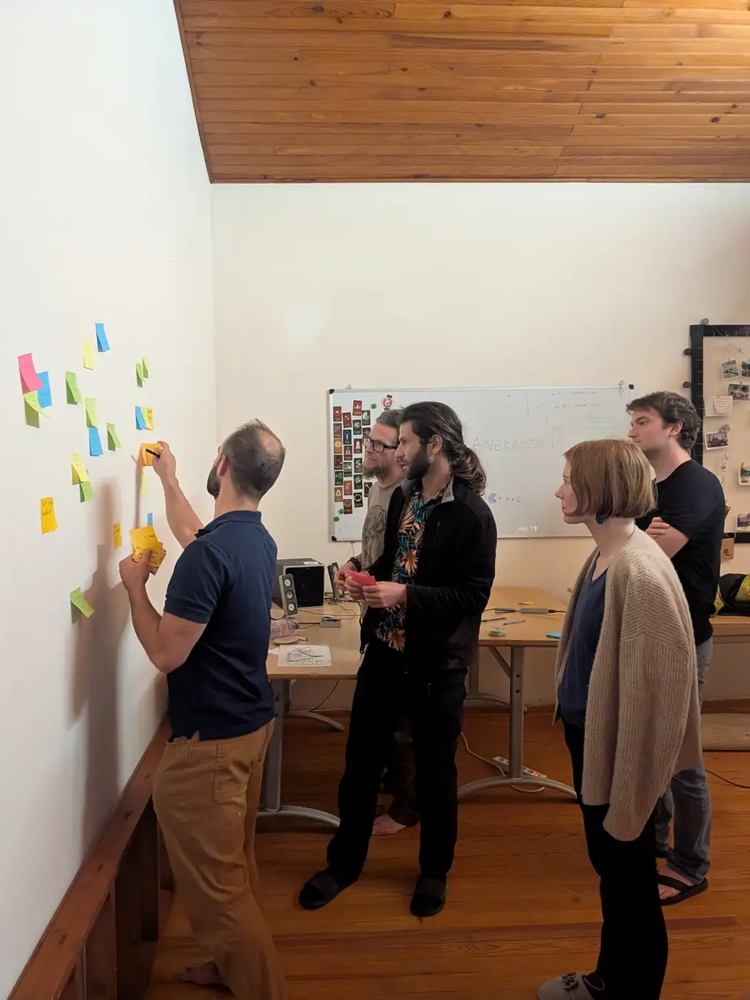
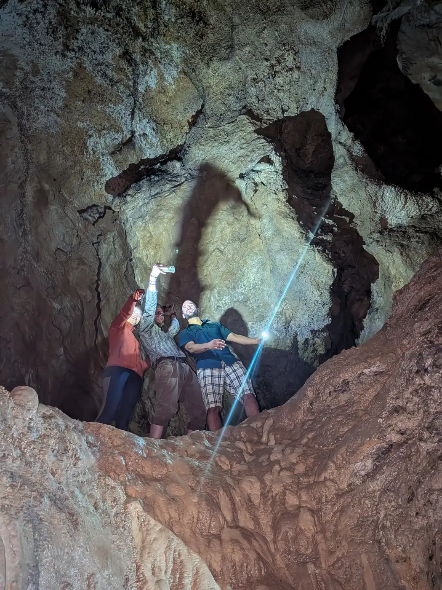
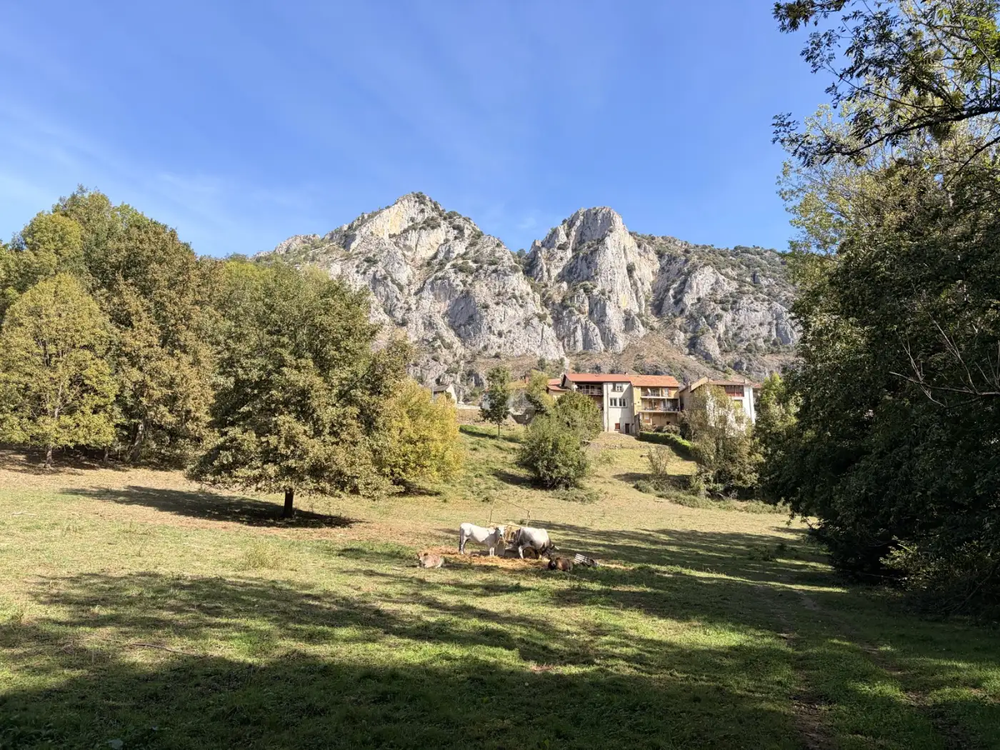

CSCSC
CSCSC
Complexity Science and Contemplative Studies Consortium
We are building the scientific culture we wish existed.
About 150 researchers in complexity science and contemplative studies. We meet on retreats, at conferences, and once a month online.
Who we are
Physicists, biologists, cognitive scientists, philosophers, and people with decades of contemplative practice. Since 2025 we have met four times in person, and we run two working groups and a monthly call.




"I feel calm, unlike most conference days."
"Less fear of being misunderstood."
"Love comes naturally to me, and yet the way I express it can bring great harm unless I'm taught."
P
Pavel ChvykovComplex systems, physics of self-organization
M
Matthew McCarthyCollective imaginaries, VUB
M
Matthieu BarbierTheoretical ecology; director, INTP
R
Robert MarslandTheoretical ecology, Trinitarian theology
What's happening
Our latest gatherings, and what came out of them.
What we ask
The questions underneath the projects. Each opens onto readings and the people working on it.
Join us
Anyone curious is welcome, no affiliation needed.
- One email a month: calls, gatherings, new talks and writing, research and funding openings
- A monthly call with open discussion
- A forum with a member map, to find people near you